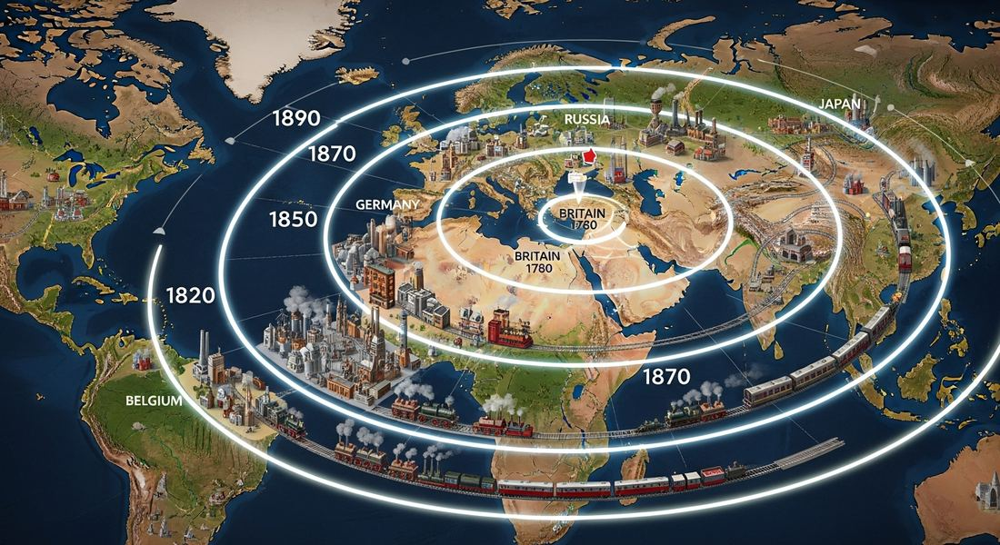
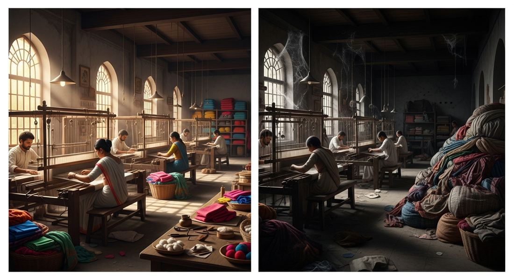

5.4 Industrialization Spreads, 1750–1900
- LO-A: The decline of Asian and Middle Eastern manufacturing: While European and American manufacturing expanded dramatically, the share of global manufacturing held by Middle Eastern and Asian countries declined. This was not because they stopped producing, they continued making goods, but because British steam-powered factories produced textiles, iron goods, and other products so much more cheaply that they undercut local manufacturers. India's cotton textile industry, once the world's largest, shrank severely as cheap British cloth entered the market. Indian and Southeast Asian shipbuilding declined similarly. After beginning in Britain, industrial production spread to Belgium and France (1810s–1830s), then Germany and the United States (mid-19th century), then Russia and Japan (late 19th century). The common pattern: countries needed coal, iron, capital, and, crucially, either political will or government investment to adopt industrial methods. Where those conditions did not exist, or where cheaper British factory goods simply flooded the market, existing manufacturing industries declined rather than industrialized. The three key illustrative examples (required): (1) Shipbuilding in India and Southeast Asia, declined as British iron steamships replaced wooden sailing ships; (2) Iron works in India, declined as cheap British iron undercut local production; (3) Textile production in India and Egypt. India's once-dominant cotton textile industry collapsed under competition from British mills; Egypt's Muhammad Ali attempted to industrialize the textile sector but ultimately could not compete. The pattern in all three: British industrial advantage translated into economic dominance.
Try each question before revealing the answer.
1. Britain industrialized first. Why would other European countries follow rather than continuing with traditional manufacturing methods?
2. India in 1750 produced roughly 25% of the world's manufactured goods, making it one of the world's largest manufacturing economies. By 1900 that share had dropped to under 2%. What most likely explains this decline?
3. Russia industrialized much later than Britain or France, not seriously until the 1860s–1890s. What factors might have delayed Russian industrialization?
4. Japan industrialized rapidly after 1868 through heavy government direction. How does this differ from Britain's industrialization pattern?
5. Why would the spread of industrialization to Europe and the United States reduce the share of global manufacturing held by Asian and Middle Eastern countries, even if those countries didn't produce less?
- Explain how different modes and locations of production have developed and changed over time.
Tap a term for its definition.
-
Definition: The initial phase of industrialization (roughly 1760–1840), centered on textile production, iron, and steam power, beginning in Britain. Significance: Established the factory system and steam power as the dominant mode of production; spread from Britain to Western Europe and the United States.
-
Definition: The decline of manufacturing in a region as a proportion of total economic activity, often because cheaper goods from other regions undercut local producers. Significance: India, Egypt, and parts of Southeast Asia experienced deindustrialization as cheap British manufactured goods flooded their markets in the 19th century.
-
Definition: A region's proportion of total worldwide manufactured goods production. Significance: The AP CED specifically requires knowledge that Middle Eastern and Asian share of global manufacturing declined as European and American share increased, a measure of how industrialization restructured global economic power.
-
Definition: A trade policy that allows goods to move between countries without tariffs or other restrictions. Significance: Britain promoted free trade in the 19th century, which benefited British manufacturers by opening markets for their cheap factory goods, but hurt non-industrialized producers who couldn't compete on price.
-
Definition: The 1868 political transformation in Japan that overthrew the old feudal government and established a new government committed to modernization and industrialization under the nominal rule of the Meiji Emperor. Significance: Led to rapid, state-directed Japanese industrialization that within decades made Japan the first non-Western industrial power.
-
Definition: A government-sponsored railroad connecting European Russia to the Pacific coast of Siberia, begun in 1891 and largely completed by 1916. Significance: Key to Russian industrialization. It connected coal and iron deposits in Siberia to Russian cities and allowed the movement of goods across Russia's vast territory.
-
Definition: A trade policy that uses tariffs, quotas, or other barriers to restrict imports and protect domestic producers from foreign competition. Significance: Countries like Germany and the United States used protective tariffs to shield their developing industries from British competition while they industrialized, the opposite of free trade.
-
Definition: An early form of manufacturing in which merchants supplied raw materials to rural workers who produced goods at home, then collected the finished products. Significance: Preceded the factory system in most of Europe and Asia; eventually replaced by factory production, though the transition was gradual and uneven.
🌍 From Britain to the World: How Industrialization Spread
Britain industrialized first, but it did not stay alone for long. The economic advantages of machine production were obvious: factories could make goods faster and more cheaply than any workshop. Any country that traded in international markets faced a simple choice, industrialize or be undercut.
The spread followed a rough geographic sequence based on which countries had the necessary combination of coal, iron, capital, and institutional capacity:
- Belgium and France (1810s–1840s): Belgium industrialized first on the continent. It had coal in the south, iron, a tradition of textile production, and entrepreneurs eager to adopt British methods. France followed, though more slowly. Both imported British machinery and sometimes British engineers (Britain tried to ban machinery exports for a while, but couldn't stop the knowledge from spreading).
- German states and the United States (1840s–1870s): Germany's industrialization accelerated after political unification in 1871 but began earlier in Prussia, which had coal in the Ruhr Valley and a government committed to building railroads. The United States industrialized rapidly after the Civil War (1865), building on its abundant coal, iron, and vast internal market protected by tariffs. By 1900, the US and Germany were challenging Britain's industrial dominance.
- Russia and Japan (1860s–1900): Both industrialized later and more deliberately, through significant government direction, in response to the threat posed by industrialized Western powers. Russia began serious industrialization in the 1860s after the Crimean War exposed its military and economic weakness. Japan industrialized after 1868 through the Meiji government's deliberate program. Both are covered in detail in Topic 5.6.

Industrialization spread outward from Britain in roughly concentric circles determined by access to coal, iron, capital, and transportation networks, with Western Europe first, then Central and Eastern Europe and North America, then Russia and Japan (Google Gemini, 2025), commercially licensed. Industrialization spread outward from Britain in roughly concentric circles determined by access to coal, iron, capital, and transportation networks, with Western Europe first, then Central and Eastern Europe and North America, then Russia and Japan (Google Gemini, 2025), commercially licensed.
📉 The Decline of Asian and Middle Eastern Manufacturing
The spread of industrial production to Europe and North America had profound consequences for manufacturing elsewhere. As British, American, and European factories produced goods more and more cheaply, their products began competing with and then replacing goods made by traditional craftspeople and manufacturers in Asia and the Middle East.
The AP CED specifically requires knowledge of three examples of this decline. All three illustrate the same pattern: existing high-quality manufacturing industries, unable to compete on price with machine-made goods, shrank or collapsed.

India's cotton textile industry, once the world's largest and most productive, shrank severely as cheap British machine-made cloth entered the Indian market under colonial free-trade policies. Skilled Indian weavers lost their livelihoods as the market shifted (Google Gemini, 2025), commercially licensed.
- Shipbuilding in India and Southeast Asia: India and Southeast Asia had centuries-old traditions of shipbuilding. Indian-built ships were considered among the finest in the world, the East India Company used them extensively. But as iron-hulled, steam-powered ships replaced wooden sailing vessels in the mid-19th century, the advantage shifted to regions with cheap iron and coal (Britain). Indian and Southeast Asian shipbuilders, working in wood without steam, could not compete with British iron steamships on cost or capability. The industry declined sharply.
- Iron works in India: India had a sophisticated iron-working tradition. But British iron production, using coal-fired blast furnaces and increasingly mechanized processes, produced iron far more cheaply than Indian iron-workers using traditional charcoal methods. As British iron flooded the Indian market under colonial free-trade arrangements, local iron production contracted.
- Textile production in India and Egypt: This is the most significant and consequential example. India had been the world's leading producer of cotton textiles for centuries. Indian muslin and cotton cloth were prized across Asia, the Middle East, and Europe. In 1750, India produced approximately 25% of global manufactured goods, much of it textiles. By 1900, that share had fallen to under 2%. The cause: British cotton mills, using steam-powered machinery and raw cotton from colonial India and the American South, could produce cloth at a fraction of the cost of hand-woven Indian textiles. Under colonial rule, India was subjected to free-trade policies that opened its market to British goods while discouraging Indian industrial development. The result was the near-collapse of one of history's great manufacturing industries. Egypt, under Muhammad Ali, attempted to industrialize its textile production (covered in Topic 5.6) but ultimately could not sustain it against British competition.
🌐 The Great Divergence: A World Split in Two
The uneven spread of industrialization created what historians call "the Great Divergence", a widening gap between industrialized and non-industrialized regions. In 1750, the major economic powers of Asia (China, India, the Ottoman Empire) collectively produced more goods and had larger economies than Europe. By 1900, the gap had reversed dramatically and was growing wider.
This divergence had several connected consequences:
- Industrialized nations had the economic surpluses to fund military technology, which gave them growing military advantages over non-industrialized nations
- Non-industrialized regions were increasingly drawn into global trade networks as suppliers of raw materials rather than manufacturers of finished goods
- The economic and military gap between industrialized and non-industrialized regions created the conditions for the wave of European imperial expansion that defines Unit 6
These videos will help you review Industrialization Spreads, 1750–1900 and solidify key concepts before your exam.
- A) The failure of Indian weavers to produce high-quality cloth that met British standards
- B) The deindustrialization of India's textile industry as a result of competition from cheaper British machine-made cloth
- C) The British government's deliberate policy of destroying Indian manufacturing through direct taxation
- D) The preference of Indian consumers for British-style clothing over traditional Indian textiles
- A) The spread of steam-powered industrial production, which dramatically increased European and American manufacturing output while Asian production grew only slowly or declined
- B) A decline in population across Asia and the Middle East that reduced demand for manufactured goods
- C) The deliberate decision by Asian governments to focus on agricultural rather than manufacturing development
- D) The destruction of Asian manufacturing capacity through European military conquest
- A) The use of free-trade policies to integrate American manufacturing into the global economy
- B) State ownership of manufacturing as a way to ensure industrial development
- C) Protectionism, using tariffs to shelter developing domestic industries from more established foreign competition
- D) The exclusion of foreign investment from the American economy to preserve domestic capital
- A) That British technology was too advanced for Indian workers to operate
- B) That Indian entrepreneurs lacked the capital or technical knowledge to build modern industries
- C) That Indian consumers preferred British-made goods over domestically produced alternatives
- D) That British colonial policy completely prevented any Indian industrial development
- A) That government infrastructure investment could accelerate industrialization by connecting resource deposits to manufacturing centers
- B) That geographic factors alone determined where industrialization occurred in Europe
- C) That Germany's industrialization was primarily driven by private entrepreneurs without government involvement
- D) That German industrialization was a direct result of military conquest of coal-producing regions
Answer all three parts (A, B, C). Write your response before clicking to see sample answers.
Part A
Identify ONE region outside of Britain and Western Europe where industrialization spread in the period 1750–1900, and briefly explain how it spread there.
Part B
Explain ONE reason why the share of global manufacturing held by Asian or Middle Eastern countries declined in the period 1750–1900.
Part C
Explain ONE way the decline of Asian manufacturing in the period 1750–1900 contributed to later developments in world history.
Write a thesis before revealing. A strong thesis restates the verb phrase, adds a quantifier, and ends with because [A] and [B].